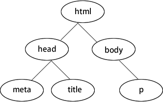

首页 > 编程笔记
HTML DOM是什么
在 HTML 中 DOM（文档对象模型）是 Web 前端里最基础、最常用的—模型。例如，一个网页其实就是一个 HTML 文件，经过浏览器的解析，最终呈现在用户面前。
HTML 语言是由很多标签组成的，代码如下所示：
其次， 每一层可以同时存在很多标签，比如 head 和 body 属于同一层，它们被外面的 html 套着。这样的结构很像计算机里的文件夹。例如，“我的电脑”是最外层，里面套着 C、D、E、F 盘，每个盘里又有很多文件夹，文件夹里又有文件夹，逐个打开后才能看到具体的文件。
为什么要按照这种结构来组织呢？目的其实是方便解析和查询。解析的时候，从外向里循序渐进，好比按照图纸盖房子，先盖围墙，再盖走廊，最后才盖卧室。查询的时候，会遵循一条明确的路线，例如“D盘/文化交流/影视作品/给产品经理讲技术avi”，一层一层地缩小范围，查找效率会非常高。
所以，浏览器在解析 HTML 文档时，会把每个标签抽象成代码里的对象，按照这种层次分明的结构组织，这就是 DOM。
如下图所示为数据结构里典型的“树”结构。程序员经常说的 DOM 树，其实就是这个意思。浏览器在解析 HTML 时，会在它的内部构建这样一棵 DOM 树，然后按照这棵树上的层次顺序解析每个标签。解析完成后，用户就看到了网页的内容。
浏览器解析完 HTML，就要开始解析 HTML 里的 JavaScript 代码。程序员可以通过 JavaScript 代码实现一些动态的网页效果。例如，从服务器拉取一段数据来展示，或做一个酷炫的动画效果，都要用到 DOM。
举个简单的例子（代码如下所示），想要在网页里显示一行字“this is from javascript”，首先要找到那个可以显示文字的标签。这是非常容易的，因为浏览器已经把 DOM 都交给 JavaScript 了。
DOM 里的对象，正好就是 JavaScript 语言里的对象。JavaScript 可以通过下面的方法修改 DOM 树上的标签对象。
以 HTML 5 的游戏为例，里面的人物要随着手指或鼠标运动，普遍的做法是通过 JavaScript 操纵 DOM 改变元素的位置来实现。可以说，DOM 使得 JavaScript 在前端世界里几乎无所不能。
但是，有一点要注意，操纵 DOM 本身是一件效率非常低的事情。一个网页往往很复杂，浏览器构造出来的 DOM 树往往很庞大，有的甚至有几千个节点。
在这么庞大的一棵树上频繁地改动，对浏览器（尤其是移动浏览器）来说是不小的工作量，稍不注意就会出现卡顿。
于是，有人发明了一种便捷的方法，叫作虚拟 DOM。
简单来说，就是用 JavaScript 模拟了一棵简单的 DOM 树，然后在这上面演练所有的 DOM 操作，等时机成熟时再把虚拟 DOM树和真正的浏览器的 DOM 树做对比，算出差异，一次性地改变真正的 DOM 树。
这两个步骤从整体上大大提高了 JavaScript 操纵 DOM 树的效率。
HTML 语言是由很多标签组成的，代码如下所示：
<!DOCTYPE html>
<html lang="en">
<head>
<meta charset="utf-8">
<title>程序员天天说的DOM到底是什么</title>
</head>
<body>
<h1>我的第一个标题</h1>
<p>我的第一个段落</p>
</body>
</html>
上述代码中，head 和 body 是标签。这些标签不是随意摆放的，它们有自己的规则。首先，它们是嵌套的，一层套一层，比如 html 套 body，body 又套 h1。其次， 每一层可以同时存在很多标签，比如 head 和 body 属于同一层，它们被外面的 html 套着。这样的结构很像计算机里的文件夹。例如，“我的电脑”是最外层，里面套着 C、D、E、F 盘，每个盘里又有很多文件夹，文件夹里又有文件夹，逐个打开后才能看到具体的文件。
为什么要按照这种结构来组织呢？目的其实是方便解析和查询。解析的时候，从外向里循序渐进，好比按照图纸盖房子，先盖围墙，再盖走廊，最后才盖卧室。查询的时候，会遵循一条明确的路线，例如“D盘/文化交流/影视作品/给产品经理讲技术avi”，一层一层地缩小范围，查找效率会非常高。
所以，浏览器在解析 HTML 文档时，会把每个标签抽象成代码里的对象，按照这种层次分明的结构组织，这就是 DOM。
如下图所示为数据结构里典型的“树”结构。程序员经常说的 DOM 树，其实就是这个意思。浏览器在解析 HTML 时，会在它的内部构建这样一棵 DOM 树，然后按照这棵树上的层次顺序解析每个标签。解析完成后，用户就看到了网页的内容。

浏览器解析完 HTML，就要开始解析 HTML 里的 JavaScript 代码。程序员可以通过 JavaScript 代码实现一些动态的网页效果。例如，从服务器拉取一段数据来展示，或做一个酷炫的动画效果，都要用到 DOM。
举个简单的例子（代码如下所示），想要在网页里显示一行字“this is from javascript”，首先要找到那个可以显示文字的标签。这是非常容易的，因为浏览器已经把 DOM 都交给 JavaScript 了。
DOM 里的对象，正好就是 JavaScript 语言里的对象。JavaScript 可以通过下面的方法修改 DOM 树上的标签对象。
<body>
<p id="display">hello world</p>
<script type="text/javascript">
document.getElementById("display").innerText="this is from javascript";
</script>
</body>
随着对前端知识学习的深入，我们会发现 JavaScript 操纵 DOM 是非常普遍的事情。例如，很多网页一开始加载出来的只是个架子，只显示出一个 loading 图标的转圈动画，只有等 JavaScript 从服务器上请求到真正的数据后操纵 DOM 来显示数据，才能看到内容，这就是典型的异步加载。以 HTML 5 的游戏为例，里面的人物要随着手指或鼠标运动，普遍的做法是通过 JavaScript 操纵 DOM 改变元素的位置来实现。可以说，DOM 使得 JavaScript 在前端世界里几乎无所不能。
但是，有一点要注意，操纵 DOM 本身是一件效率非常低的事情。一个网页往往很复杂，浏览器构造出来的 DOM 树往往很庞大，有的甚至有几千个节点。
在这么庞大的一棵树上频繁地改动，对浏览器（尤其是移动浏览器）来说是不小的工作量，稍不注意就会出现卡顿。
于是，有人发明了一种便捷的方法，叫作虚拟 DOM。
简单来说，就是用 JavaScript 模拟了一棵简单的 DOM 树，然后在这上面演练所有的 DOM 操作，等时机成熟时再把虚拟 DOM树和真正的浏览器的 DOM 树做对比，算出差异，一次性地改变真正的 DOM 树。
这两个步骤从整体上大大提高了 JavaScript 操纵 DOM 树的效率。
关注公众号「站长严长生」，在手机上阅读所有教程，随时随地都能学习。内含一款搜索神器，免费下载全网书籍和视频。

微信扫码关注公众号